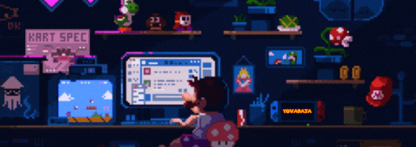

Yuvaraja
FullStack Developer • Cloud Computing Specialist • Open-Source Enthusiast • Security analyst

About me
Hey there! I' m Yuvaraja, a developer who enjoys coding in Python, Node.js, and C/C++.
I also work in web development with HTML, CSS, and Next.js. When it comes to databases, I'm familiar with MongoDB, Redis, and MySQL.
Aside from coding, I have a keen interest in computer networks and Linux. I like to make systems secure and efficient, and I' m always up for a good problem-solving challenge. Additionally, I have experience in cloud computing, which adds flexibility and scalability to my projects.
In my free time, I' m learning about machine learning to broaden my skill set and keep up with the latest tech trends. Looking forward to connecting and sharing knowledge with fellow enthusiasts!
Education
Competitons & Events
Projects